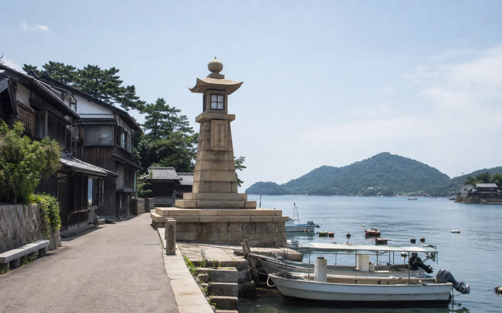
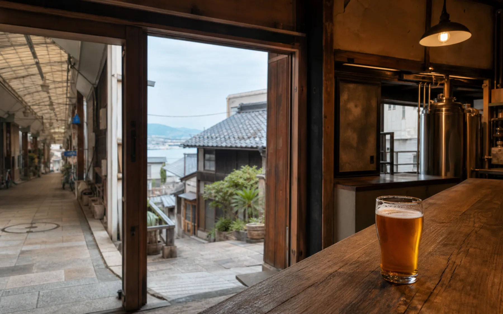

ホテルを出発
公式シャトルの朝便。広島駅には10:20着。
かき船かなわ「瀬戸」予約済
OUR ANSWER
3日目の「みっちゃん総本店・おりづるタワー・本通り」をすべて外せば、 鞆の浦か尾道のどちらか一方は可能です。ただし、移動の比率が大きくなり、 ホテル時間と旅の余白は減ります。
WHAT DOESN'T MOVE
公式シャトルの朝便。広島駅には10:20着。
遅延と市内移動を考えても、ここまでなら安心。
予約済み。ここは動かさない前提で比較。

IMAGE · ORIGINAL / AI-GENERATEDTOMONOURA
常夜燈、古い町家、静かな船溜まり。コンパクトな港町なので、 2時間半でも景色は味わえます。ただし、広島駅から福山駅、 さらに路線バス30分という二段階の移動です。
『崖の上のポニョ』の舞台と公式に明言された場所ではありません。 宮崎駿監督が鞆の浦に長期滞在したことから、地元で作品とのつながりが語られています。
REALISTIC ROUTE
無料シャトルで広島駅へ。
さくら744号。10:56着。
鞆鉄バスで11:45着。
常夜燈と町並み。滞在は約2時間40分。
15:00着。帰りの新幹線へ。
のぞみ155号。15:33着。
カフェで涼み、長距離移動の疲れをリセット。
タクシー移動と休憩を入れても余裕あり。
広島駅10:20着から新幹線10:33発まで13分。シャトルが遅れると、 鞆の浦到着が大きく後ろ倒しになります。

IMAGE · ORIGINAL / AI-GENERATEDONOMICHI
尾道ブルワリーは1894年築の古蔵を使った醸造所。 土曜は13:00開店なので、午前に到着して昼食と短い町歩き、 そのあとクラフトビールという流れが組めます。
尾道産レモンのエールなど、土地の素材を使ったビールが魅力。 JR尾道駅から徒歩約15分です。
REALISTIC ROUTE
無料シャトルで広島駅へ。
こだま946号。11:18着。
約10〜15分。真夏の移動も短縮。
坂道は欲張らず、平地中心に。
開店と同時に。約55分味わう。
約10〜15分。帰りは乗換えなし。
こだま951号。15:07着。
駅周辺かカフェでゆっくり涼む。
広島駅からタクシー。十分な余裕あり。
尾道滞在は約2時間20分、ブルワリーは55分程度。 千光寺や坂道まで入れる余裕はなく、尾道を「少し味わう」訪問になります。
SIDE BY SIDE
RECOMMENDATION
鉄道中心で移動時刻を読みやすく、尾道ブルワリーという明確な目的もあります。 15:07に広島駅へ戻れるため、19:00の特別ディナーまで休憩も取れます。 ただし現行プランへの追加ではなく、市内観光との完全な入れ替えです。
TOMONOURA + ONOMICHI
尾道と鞆の浦を結ぶ定期航路はありますが、旅行日の 2026年8月8日は運休日です。 19:00予約なら鉄道と路線バスで両方を回ること自体は可能ですが、 真夏に乗継ぎと移動が続き、どちらの滞在も短くなるため、この旅のペースには合いません。
SOURCES · CHECKED 2026.07.27
列車・バスは遅延や改定の可能性があります。実際に変更する場合は前日に再確認してください。